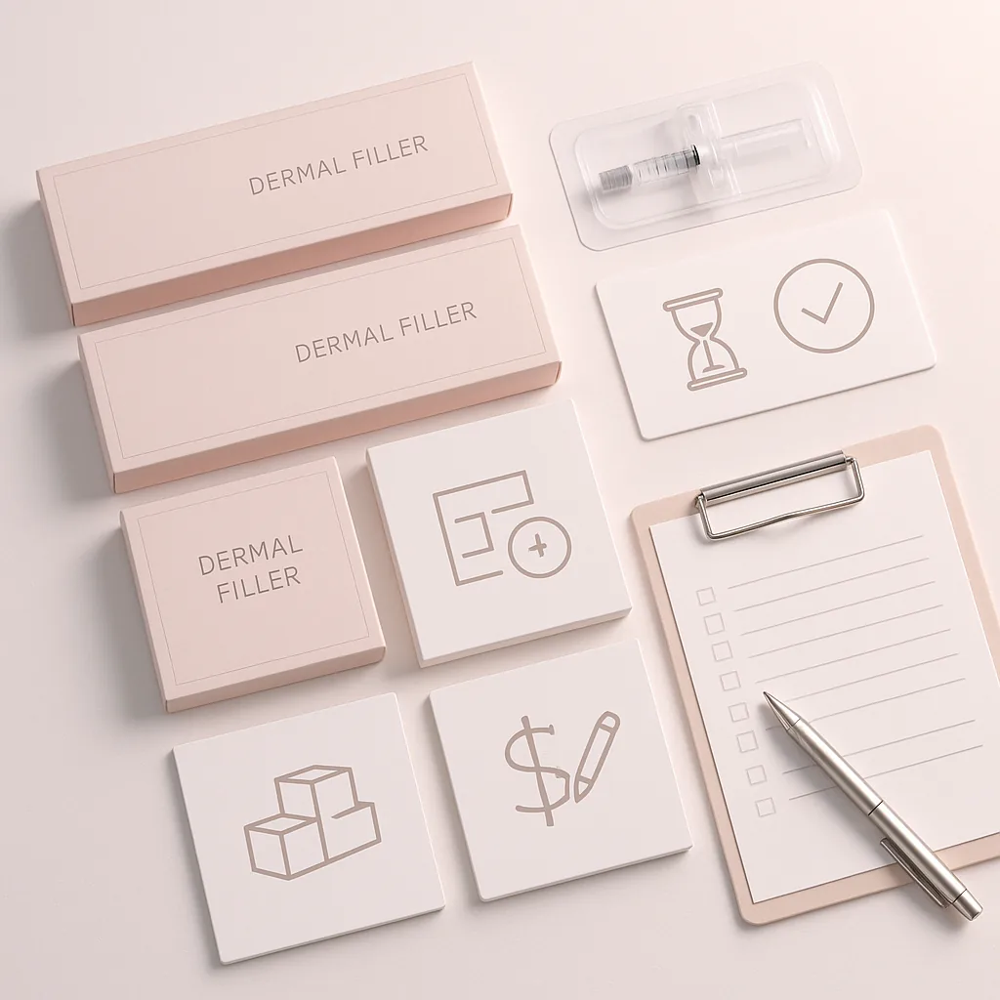
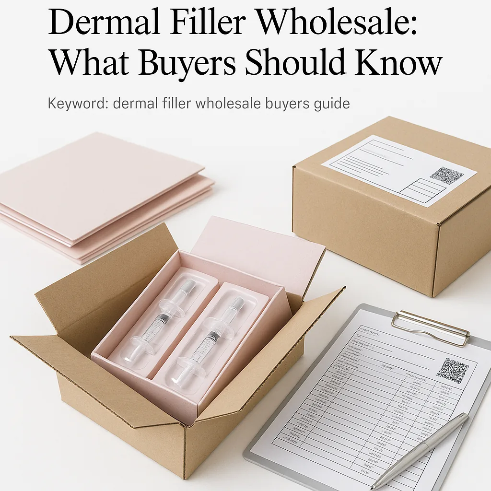

This guide provides professional buyers with essential insights into sourcing dermal fillers wholesale, including logistics, comparison criteria, and order planning.
Key Takeaways
- Understand the importance of sourcing from reputable wholesale suppliers to ensure product quality.
- Evaluate packaging and batch visibility to maintain product integrity and traceability.
- Compare brands and formulations to meet specific client needs and preferences.
- Prepare detailed documentation for shipping to streamline logistics and avoid delays.
- Plan your minimum order quantities (MOQ) and reorder schedules to optimize inventory management.
What this guide covers
- Understanding dermal fillers
- Buyer scenarios
- Comparison criteria
- Checklist before requesting a quote
- Shipping, packing, and documentation
- MOQ and reorder planning
- Frequently asked questions
What buyers should understand first

Dermal fillers are injectable substances used to restore volume, smooth wrinkles, and enhance facial contours. They are popular in aesthetic practices, including clinics and spas, for their ability to provide immediate results with minimal downtime. As a professional buyer, understanding the various types of dermal fillers available in the market is crucial for making informed purchasing decisions. Buyers must consider factors such as the formulation, brand reputation, and regulatory compliance when sourcing these products.
When looking at dermal fillers wholesale, it's essential to recognize that not all products are created equal. Different brands may offer varying levels of quality, safety, and efficacy. Therefore, a thorough understanding of the product category will help buyers identify the best options for their specific business needs.
Which buyers is this most relevant for?
This guide is particularly relevant for clinics, spas, resellers, and distributors who are involved in purchasing dermal fillers. Each of these buyer types has unique requirements and considerations when sourcing these products. For instance, clinics may prioritize quality and brand reputation, while resellers might focus on pricing and availability. Understanding the specific needs of your business type will help you tailor your procurement strategy effectively.
Order planning is critical for all buyers. Clinics and spas need to maintain adequate stock levels to meet client demand, while resellers must ensure they can fulfill orders promptly. Distributors, on the other hand, need to manage relationships with multiple clients and maintain a diverse inventory. Identifying the right dermal filler products and establishing a reliable supply chain are essential for success in this competitive market.
How to compare options before ordering
When comparing different dermal fillers before placing an order, consider the following criteria:
- Product Type: Different fillers serve various purposes, such as volumizing, hydrating, or smoothing. Ensure you select the appropriate type for your clients' needs.
- Brand: Research reputable brands known for quality and safety. Customer reviews and testimonials can provide valuable insights.
- Packaging: Examine the packaging for tamper-proof seals and clear labeling, which are essential for maintaining product integrity.
- Batch/Expiry Visibility: Ensure the supplier provides clear information about batch numbers and expiration dates to avoid using expired products.
- Supplier Communication: Evaluate the responsiveness and professionalism of the supplier. Good communication can prevent misunderstandings and ensure a smooth purchasing process.
- Destination Requirements: Consider any specific shipping requirements or regulations that may apply to your location.
Buyer checklist before requesting a quote


- Identify the specific dermal fillers needed for your practice.
- Determine the desired quantities based on client demand and inventory levels.
- Check for any specific packaging or branding requirements.
- Prepare documentation for shipping and customs, if applicable.
- Review supplier terms, including payment and return policies.
- Confirm the supplier's ability to meet your MOQ and delivery timelines.
- Assess any additional services offered by the supplier, such as training or support.
Shipping, packing and documentation questions
Logistics play a crucial role in the procurement of dermal fillers. Buyers should consider the following questions when planning for shipping and packing:
- What are the shipping options available, and how do they align with your budget and timeline?
- What packing materials are used to ensure product safety during transit?
- What documentation is required for shipping, including invoices and customs forms?
- How does the supplier handle potential shipping delays or issues?
- Are there any specific regulations or restrictions for importing dermal fillers into your region?
MOQ, quotation and reorder planning
When preparing to place an order for dermal fillers, it's essential to consider the following aspects related to MOQ, quotations, and reorder planning:
- Determine the minimum order quantities (MOQ) required by the supplier and how they fit into your purchasing strategy.
- Request a wholesale quotation that includes pricing, shipping costs, and any applicable discounts.
- Plan for future orders by assessing your sales trends and client demand to avoid stockouts.
- Consider the different variants of dermal fillers you may need to stock to cater to diverse client preferences.
- Contact SOLA to confirm current availability and request a wholesale quotation tailored to your needs.
FAQ
What are dermal fillers made of?
Dermal fillers are typically made from hyaluronic acid, collagen, or other biocompatible materials designed to enhance facial volume and smoothness.
How do I choose the right dermal filler for my clients?
Consider your clients' specific needs, desired outcomes, and any potential allergies when selecting a dermal filler.
What is the typical shelf life of dermal fillers?
The shelf life of dermal fillers varies by product but typically ranges from 12 to 24 months. Always check the expiration date before use.
Can I reorder the same product easily?
Yes, maintaining a record of your previous orders can help streamline the reordering process with your supplier.
How can I ensure the quality of the dermal fillers I purchase?
Source your dermal fillers from reputable wholesale suppliers and check for certifications and product reviews to ensure quality.
Contact SOLA for wholesale quotation via WhatsApp.
Planning a wholesale request?
Send product names, quantities and destination for a tailored discussion.
Contact SOLA on WhatsApp →General educational content for professional buyers. Not medical, legal, regulatory or import advice.